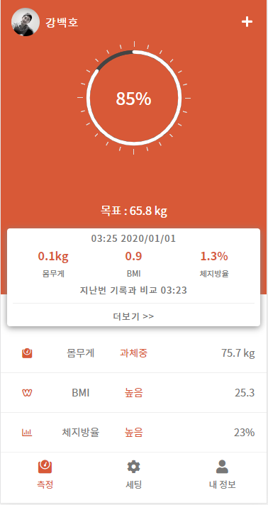

1).App Store나 Google Play에서 "Fitdays"를 검색하여 다운로드 할 수 있습니다.
2).앱을 다운로드하여 기기에 설치합니다.
3).Android 체제의 스마트폰을 사용하는 경우 앱을 실행하면 Bluetooth(이 이후로 블루투스 표기)를 활성화하라는 지시창이 표시됩니다. 블루투스를 설정한 다음 GPS & 위치 허용을 켜십시오.
1).스마트폰의 네트워크가 제대로 작동하는지, Fitdays의 네트워크 허용을 설정하였는지 확인하십시오.
2).이메일 주소로 게정을 등록하십시오.
3).성별, 키, 나이 등의 개인정보를 올바르게 입력하십시오.
4).스마트폰의 블루투스가 켜져 있는지 확인하고, Android 체제 스마트폰은 GPS 및 위치 정보가 설정되어 있는지 확인하십시오.
5).체중계에 올라서면 체중계가 작동합니다. [연결]이 표시되면 자동으로 페어링이 완료된 것입니다. [연결 끊어짐]이 표시되는 경우에는 [내정보] -> [장치]를 선택하여 체중계와 페어링하십시오.
1).화면에 [연결]이 표시되는지 확인하십시오.
2).앱을 메인 화면 상태로 유지하거나 [측정]을 선택하십시오.
3).맨발로 가볍게 체중계에 올라섭니다. 양 발에 수분을 촉촉한 정도로만 살짝 바른 뒤에 몸을 곤데 편 상태로 서서 맨발로 전극을 균일하게 터치하십시오.
4).측정 및 분석 중에는 디스플레이의 수치가 깜박입니다. 휴대폰에서 모든 체성분 데이터를 수신하면 체중 밑에 [완료]가 표시됩니다.
5).체중계에 올라서면 체중계가 작동합니다. [연결]이 표시되면 자동으로 페어링이 완료된 것입니다. [연결 끊어짐]이 표시되는 경우에는 [내정보] -> [장치]를 선택하여 체중계와 페어링하십시오.
Fitdays 앱 사용자는 서버를 통해 측정한 모든 히스토리를 저장 할 수 있습니다. 네트워크 기능은 다음의 작업을 하는 데 필요합니다.
1).계정 등록 및 로그인
2).신규 사용자 추가 또는 사용자 정보 수정
3).페어링 및 체중계 삭제
4).설정 메뉴 수정

1).연결 상태
2).사용자 목록
3).수동 기록 / FAQ / 공유 / 유아 측정모드 /상태
4).몸무게
5).측정 상태
6).목표 몸무게
7).최근 측정한 시간 & 날짜
8).마지막 측정값과의 차이
9).터치하면 상세 체성분 데이터를 볼 수 있습니다.
10).메인 화면 측정 / 설정 / 내 정보
얻을 수 있는 체성분 데이터의 종류는 제품 모델과 언어에 따라 다릅니다.
(정확한 정보는 제품의 사용 설명서를 참조하십시오)
앱에서 제공하는 체성분 데이터는 18가지로 아래와 같습니다.
1).체중
2).BMI
3).체지방율
4).내장지방지수
5).수분
6).골격근량
7).근육량
8).골질량
9).단백질
10).기초대사량(BMR)
11).신체 난이
12).지방량
13).체수분(Kg)
14).체단백질
15).비만 정도
16).표준 체중
17).체형
1).체중 모드 기능
2).키 기록 기능(16세 미만)
3).심박수 모니터, 신체 밸런스 추적(위 두 가지는 기능을 지원하는 체중계에서만 사용 가능합니다.)
4).Apple Health, Googlew Fit, Fitbit, Samsung Health와 연동가능
주기적으로 운동을 하고 근육량이 많은 분들에게는 맞는 데이터를 제공하는 모드입니다. 자신의 신체 정보를 대략적으로 아시 경우, 기본 모드와 운동선수 모드 두 가지를 측정하여 본인에게 더 알맞은 데이터를 사용하시면 됩니다.
1).체중계 뒷면에 있는 버튼을 터치하면 측정 단위를 Kg와 lb간에 전환할 수 있습니다. 일부 모델은 st 단위도 지원합니다.
2).단위를 선택하면 앱에서 체중계의 단위를 자동으로 반영하여 측정합니다.
3).체중계 뒷면에 단위 전환 버튼이 없는 경우에는 앱의 단위 메뉴에서 전화하여 주십시오.
(특정 조작은 사용 설명서를 참조하십시오.)
앱과 체중계가 연결되지 않았을 때 표시되는 내용입니다. 이 경우에는 아래의 사항을 확인하십시오.
1).스마트폰의 네트워크 기능이 올바르게 작동하는지 확인하십시오.
2).체중계가 켜져 있고 스마트폰의 블루투스 기능이 활성화되어 있어야 합니다.
3).체중계와 블루투스가 모두 켜져 있는 경우에는 스마트폰의 IOS와 Android 버전을 확인하십시오. IOS는 버전 8.0, Android는 버전 5.0 이상이어야 합니다.
4).메인 홤녀의 연결상태 [연결] 또는 [연결이 끊어짐]을 확인하십시오.
메인 화면에[연결이 끊어짐]이 표시되면 메인 화면에서 [내 정보] -> [장치]를 터치하여 체중계와 앱을 페어링하십시오.
체중계 디스플에이에 [LO]가 표시되면 배터리의 수명이 다한 것입니다. 새로운 배터리로 교체하여 주십시오.
1).체중계 디스플레이에 [Err]이 표시되면 측정 가능한 몸무게를 초과했음을 의미합니다. 쳬중계에서 내려와주십시오.
2).체중계의 최대 즉정 가능 무게는 180Kg입니다.
1).측정 중 에러가 발생하면 체중계 디스플레이에 [C]가 표시됩니다.
2).체중계에서 내려온 다음 다시 올라가서 측정해보십시오.
측정 시 아래의 사항을 확인하십시오.
1).앱의 메인 화면을 켜두십시오.
2).사용자는 맨발 상태여야 하며 전극에 양발을 균일하게 터치해야합니다.
3).체중계는 물기가 완전히 없어야 하며, 양발바닥은 촉촉한 정도로만 수분이 있으면 됩니다.
4).디스플에이에 표시되는 숫자가 깜박이면 측정이 완료된 것이나, 깜박임이 완전히 멈출 때까지 체중계에서 약 5초~10초간 서계십시오.
5).블루투스 기능이 켜져 있어야 합니다.
6).다른 체중계가 블루투스에 페어링되어 있지 않은지 확신하십시오.
1).[내 정보]를 터치한 다음 원하는 사용자를 선택하십시오.
2).기본 사용자의 경우에는 [내 정보]의 프로필 사진을 클릭하여 변경할 수도 있습니다.
3).변경 후에는 확인을 터치하여 내용을 저장해주십시오.
1).[내 정보] -> [세팅]을 터치하여 Google Fit을 찾으십시오.
2).화면에서 Google Fit을 이미 있는 계정으로 로그인하거나 새로운 계정으로 등록할 수 있도록 설정하십시오.
3).연결이 이루어지면 데이터가 Google Fit에 매번 업로드됩니다.
참조: 측정이 완료된 후에만 당일의 해당 체성분 데이터를 확인 할 수 있습니다.
1).[내 정보] -> [세팅]을 터치하여 Fitbit을 찾으십시오.
2).화면에서 Fitbit을 활성화한 다음 계정으로 로그인하십시오.
3).표시되는 웹페이지에서 [허용]을 터치하여 설정하십시오.
4).앱에 Fitbit 버튼이 표시되게 하고 네트워크 기능을 사용할 수 있도록 하십시오.
참조: 측정이 완료된 후에만 당일의 해당 체성분 데이터를 확인 할 수 있습니다.
1).등록 페이지의 [비밀번호를 잊어버렸습니다]를 통해 찾을 수 있습니다.
2).비밀번호 변경은 고객 서비스에 문의하여 주십시오.
계정 하나에 최대 24명의 사용자와 1명의 비회원 사용자를 추가할 수 있습니다.
참조 : 비회원의 경우에는 3가지 체성분 데이터 (체중, BMI, 체지방율)만 표시되며 데이터 기록은 불가능합니다.